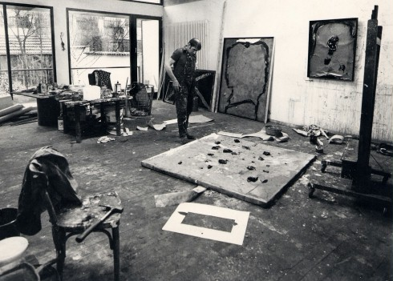

Das Prinzip, ohne Vorzeichnung oder formale Vorstellung vom Ergebnis an ein Werk heranzugehen, ist frühzeitig (etwa von Clement Greenberg) als symbolisch gedeutet worden für eine neue und unbegrenzte Freiheit, die sich der Kunstanschauung totalitärer Systeme entgegenstellt. Emil Schumachers Werk ist in diesem Sinne sowohl ‚freie’ Malerei, als auch darüber hinaus ‚befreiende’ Malerei, die ihren Betrachtern alle Freiheit der Interpretation lässt.

Emil Schumacher bei der Arbeit